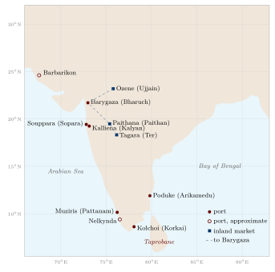
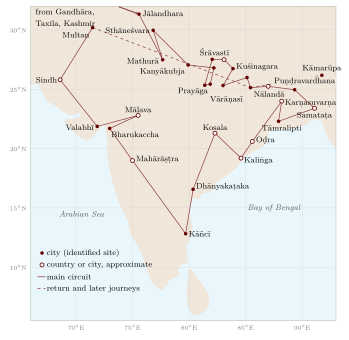

Chapter 6: India in the Accounts of Foreign Travellers¶
From the time of the Achaemenid Persian empire onward, visitors to India wrote about what they saw and heard. Greek envoys and merchants, Chinese and Korean Buddhist pilgrims, Arab and Persian geographers, a Central Asian polymath, a Moroccan judge, Italian, Persian and Russian travellers of the fifteenth century, and French physicians and jewellers of the seventeenth left accounts that are among the most important sources for the historical geography of the subcontinent. For some periods and regions they are the only detailed descriptions we have.
These accounts must be read critically. Each traveller had his own purposes, prejudices and sources; many relied on interpreters and hearsay; some repeated the marvels expected of distant lands. Their descriptions of religion and society are often filtered through their own categories. But when they describe routes, distances, cities, ports, products and the places they visited, and when their statements can be checked against inscriptions, archaeology and Indian texts, they are often of great value. This chapter presents the principal travellers in chronological order, with the dates of their journeys and the main editions in which their accounts can be read.
6.1 Greek and Roman Accounts¶
6.1.1 Before Megasthenes¶
Greek knowledge of India began with the Persian empire, which included the Indus region from the late sixth century BCE. Herodotus, in the fifth century, knew of the Indians as the most numerous people of the Persian empire and repeated stories of gold-digging ants. Alexander’s campaign in the north-west (327–325 BCE) produced accounts by his officers, notably the admiral Nearchus, whose voyage down the Indus and along the Makran coast was later summarised by Arrian.
6.1.2 Megasthenes¶
Megasthenes was sent by Seleucus I as envoy to Candragupta Maurya at Pāṭaliputra around 300 BCE; the exact date and the length of his stay are debated (Bosworth 1996). His Indica is lost, but long passages survive in Diodorus, Strabo and Arrian, and shorter ones in Pliny and others. The fragments were collected by E. A. Schwanbeck in 1846 and translated by J. W. McCrindle in 1877 (McCrindle 1877); McCrindle later collected the shorter notices of India in other Greek and Latin writers (McCrindle 1901). Richard Stoneman’s recent study places them in the context of Greek writing on India (Stoneman 2019).
Megasthenes described India as a quadrilateral bounded by mountains and sea, watered by great rivers and enjoying two rainy seasons and two harvests a year. He described Pāṭaliputra (Palibothra) at the confluence of the Ganges and the Son as a long, narrow city enclosed by a wooden palisade with many gates and towers and a moat. Excavations at Bulandi Bagh and Kumrahar in Patna early in the twentieth century found remains of a massive timber palisade, which agrees with his account in general, though the exact numbers he gave cannot be checked. He also described a division of Indian society into seven classes (philosophers, farmers, herders and hunters, artisans and traders, soldiers, overseers, and councillors); this does not match the Indian varṇa scheme and probably combines observation of occupations with a Greek interest in classifying peoples. Alongside these observations he repeated fabulous stories of mouthless men and men with ears large enough to sleep in, which were standard features of Greek writing about the edges of the world.
6.1.3 Megasthenes on Mauryan Administration¶
Some of the most interesting fragments of Megasthenes, preserved by Strabo, describe officials concerned with the land. Some, he says, supervised the rivers, measured the land as in Egypt, and inspected the sluices by which water was let out from the main channels into branches, so that all might have an equal supply; the same officials looked after the roads and set up pillars at regular intervals to show turnings and distances. Other boards of officials in the city supervised crafts, foreigners, births and deaths, trade, and weights and measures. Historians have compared these descriptions with the officials of the Arthaśāstra; the comparison shows both agreements and differences, and the date of the Arthaśāstra (Chapter 1) means that the two cannot simply be used to confirm each other (Stoneman 2019; Olivelle 2013).
6.1.4 Arrian’s Indica¶
Arrian, a Greek historian of the second century CE, wrote a short Indica as a companion to his history of Alexander. Its first part summarises Megasthenes and Eratosthenes on the size and shape of India, its rivers and its peoples; its second part tells the story of Nearchus’ voyage from the mouth of the Indus along the coast of Makran to the Persian Gulf in 325–324 BCE, with its harbours, landmarks, shortages of water and encounters with the fish-eating peoples of the coast. It is one of the earliest surviving narratives of a coastal voyage in the region (McCrindle 1877).
6.1.5 The Periplus Maris Erythraei¶
The Periplus of the Erythraean Sea is a practical handbook written in Greek by a merchant based in Roman Egypt, probably in the mid-first century CE (Casson 1989). It describes the ports of the Red Sea, Arabia, East Africa and India, with the goods traded at each, the best seasons for sailing and the hazards of the approach. For India it is the most detailed source of its time (Table 6.1 and Figure 6.1).
| Name in the Periplus | Usual identification | Notes |
|---|---|---|
| Barbarikon | in the Indus delta | port for the Indus valley |
| Barygaza | Bharuch, on the Narmadā | the great port of the north-west coast; difficult approach and strong tides |
| Ozene | Ujjain | former royal capital; inland source of goods for Barygaza |
| Paithana, Tagara | Paithan, Ter | inland markets of the Deccan |
| Souppara, Kalliena | Sopara, Kalyan | ports near modern Mumbai |
| Muziris | near Kodungallur (Pattanam), Kerala | the leading pepper port |
| Nelkynda, Bakare | inland and coastal sites in southern Kerala | pepper trade (exact locations debated) |
| Kolchoi | Korkai, Tamil Nadu | pearl fishery |
| Poduke | Arikamedu, near Puducherry | trading station on the east coast |

The Periplus says that goods came down to Barygaza from Ozene and from Paithana and Tagara in the Deccan, and it describes the open-sea crossing to southern India with the south-west monsoon, which it associates with a pilot named Hippalus. Its account of the east coast and the lands beyond the Ganges is vaguer.
Archaeology has confirmed the trade it describes. At Arikamedu, excavated by Mortimer Wheeler in 1945 and later by Jean-Marie Casal and Vimala Begley, Roman amphorae and Italian red-gloss pottery were found; at Pattanam in Kerala, excavations since 2007 have produced Mediterranean pottery and are thought by many to locate Muziris. A papyrus now in Vienna records a loan contract for a cargo shipped from Muziris to Egypt in the mid-second century (Tomber 2008; Begley and De Puma 1991).
6.1.6 Ptolemy¶
Claudius Ptolemy’s Geography (c. 150 CE) gives latitude and longitude for many places in India, which he divided into India “within the Ganges” and “beyond the Ganges”. The theoretical chapters are translated by Berggren and Jones; for the Indian coordinates and their identifications McCrindle’s old commentary is still the most convenient guide (Berggren and Jones 2000; McCrindle 1885). His coordinates were derived from merchants’ itineraries rather than from observation, and his map of India is badly distorted: the peninsula is much too short and broad, so that the coast runs roughly east–west instead of turning sharply south, and Taprobane (Sri Lanka) is hugely enlarged. Many of his place-names can nevertheless be identified, and they are an important record of the towns and peoples known to the Roman world. When Ptolemy’s work was translated into Latin in the early fifteenth century, its picture of India shaped European expectations before the Portuguese voyages.
6.1.7 After Ptolemy: Pliny and Cosmas¶
Roman writers noted the cost of the Indian trade. Pliny the Elder, writing in the 70s CE, complained that India drained the Roman empire of at least fifty million sesterces a year, and that India, China and Arabia together took a hundred million, in exchange for luxuries; he also describes the route to India and the sailing seasons. The large number of Roman gold and silver coins found in southern India, especially in Tamil Nadu and Kerala, confirms that the trade was paid for partly in coin (Tomber 2008).
In the sixth century the Alexandrian merchant known as Cosmas Indicopleustes (“who sailed to India”) included in his Christian Topography a description of Taprobane (Sri Lanka) as a great meeting point of ships from India, Persia and Ethiopia, and of the pepper country of “Male” (Malabar), where he reports a Christian community. His book is better known for its attempt to prove that the earth is flat, like the Tabernacle of Moses—a reminder that sound practical knowledge of distant lands and a fanciful cosmology could sit side by side in one author, as they did in many traditions.
6.2 Chinese Buddhist Pilgrims¶
6.2.1 Faxian¶
The monk Faxian left Chang’an in 399 CE to find complete texts of the monastic rules. He crossed Central Asia, entered India from the north-west, and spent several years in the Gangetic plain, studying at Pāṭaliputra and visiting the sites of the Buddha’s life. He then spent two years at Tāmralipti in Bengal and two in Sri Lanka before sailing home by way of the Indonesian archipelago, reaching China in 412. His Record of the Buddhist Kingdoms (Foguo ji) is short but precise about routes and distances (Legge 1886).
Faxian’s India is the India of the Gupta period, though he never names the king. He describes the Middle Country as prosperous and mildly governed, with few corporal punishments. He also records that the caṇḍālas lived apart, and that when they entered a town or market they struck a piece of wood to warn others to avoid contact with them—one of the earliest dated descriptions of the practice of untouchability by an outside observer.
6.2.2 Xuanzang¶
Xuanzang left China in 629 against an imperial ban and returned in 645. In the intervening years he travelled through Central Asia and across much of India, studied for several years at Nālandā under the teacher Śīlabhadra, met King Harṣa of Kanauj and King Bhāskaravarman of Kāmarūpa, and attended Harṣa’s great assembly at Prayāga. His Record of the Western Regions of the Great Tang (Da Tang Xiyu ji, 646), compiled with his disciple Bianji, describes 138 countries, about 110 of which he says he visited himself. For each it gives the size of the country and its capital, the climate, products, customs, language, the state of Buddhism (numbers of monasteries and monks, schools followed) and sacred sites with their legends (Beal 1884; Li 1996). Figure 6.2 traces the order of his journey.

The account is the single most important source for the historical geography of seventh-century India. In the nineteenth century Alexander Cunningham used Xuanzang’s directions and distances to identify many ancient sites, including Śrāvastī, Kuśinagara and Sāṅkāśya (Cunningham 1871). Xuanzang also records the decline of Buddhism in many regions, with deserted monasteries in places such as Kapilavastu and Śrāvastī, and the strength of non-Buddhist traditions.
6.2.3 How Xuanzang Described a Country¶
Xuanzang’s descriptions follow a regular pattern, which makes them unusually useful for historical geography. For each country he gives its circumference in li, the circumference of its capital, the quality of its soil and crops, its climate, the character and dress of its people, its script and language, the number of Buddhist monasteries and monks and the schools they followed, the number of temples of other traditions, and then the sacred sites with their legends. He often names the ruling king and his caste. He describes, for example, the great city of Kanyākubja (Kanauj) under Harṣa, with its monasteries and temples; the country of Mahārāṣṭra under Pulakeśin II, whose proud and warlike people had resisted Harṣa’s attack; and the decline of once-famous Buddhist sites (Beal 1884; Li 1996). The figures for circumference and distance are approximate and sometimes conventional; it is the order of the countries and the directions between them that made Cunningham’s identifications possible.
6.2.4 Yijing¶
Yijing (635–713) travelled by sea. He sailed from Guangzhou in 671, studied Sanskrit for six months at Śrīvijaya in Sumatra, and reached Tāmralipti in 673. He spent about ten years at Nālandā and then several years in Śrīvijaya copying and translating texts before returning to China in 695. His Record of the Inner Law Sent Home from the South Seas describes Buddhist monastic practice in India and Southeast Asia (Takakusu 1896); a second work gives brief lives of some sixty Chinese and Korean monks who travelled to India in the seventh century, many by sea and many of whom died on the way. Yijing recommended Śrīvijaya, where he reported more than a thousand monks, as a place for Chinese monks to study before going on to India. His works are a key source for the maritime route between China and India and for the place of Southeast Asian ports in the Buddhist world (Sen 2003).
Historical Note: Nālandā
Nālandā, in Bihar, was founded in the fifth century CE and was the greatest Buddhist monastic centre of learning in India for several centuries. Xuanzang and Yijing both studied there and describe its life. It was sacked during the campaigns of Bakhtiyār Khaljī in Bihar around 1200, and the Tibetan pilgrim Dharmasvāmin, who visited in 1234–36, found only a small community living among the ruins (Roerich 1959). Popular claims that its library held “nine million manuscripts” have no basis in the sources.
6.3 Arab and Persian Writers¶
6.3.1 Merchants and Geographers¶
From the ninth century, Arabic writers described India on the basis of merchants’ reports and their own travels. The Account of China and India attributed to the merchant Sulaymān (851), the route book of Ibn Khurradādhbih (Kitāb al-masālik wa’l-mamālik, ninth century), al-Masʿūdī’s Meadows of Gold (943) and the collection of sailors’ tales The Wonders of India (tenth century) describe the ports of the west coast, the trade in spices, textiles and horses, and the kingdoms of India. They call the greatest king of India the “Balharā”, a title derived from the Rāṣṭrakūṭa kings of the Deccan, and they note the security of trade in Rāṣṭrakūṭa territory (Ahmad 1989).
6.3.2 Al-Bīrūnī¶
Abū Rayḥān Muḥammad ibn Aḥmad al-Bīrūnī (973–c. 1050), born in Khwarazm, was taken to Ghazni after Maḥmūd of Ghazni conquered his homeland, and spent years in the Ghaznavid-held Punjab. He learned Sanskrit, worked with Indian scholars, and around 1030 completed a book on India, Taḥqīq mā li-l-Hind (“Verifying all that the Indians recount”), translated by Eduard Sachau as Alberuni’s India (Sachau 1910).
Al-Bīrūnī set out to describe Indian beliefs and sciences as Indians themselves understood them, quoting Sanskrit texts and comparing them with Greek ideas. His geographical chapters cover the measures of distance; the routes and distances between Kanauj and other cities; the rivers of India; the Purāṇic description of the earth, Meru and the seven continents; the astronomers’ spherical earth; the inhabited world and the position of Laṅkā; and the methods of finding longitude. He is critical of Indian scholars where he finds their statements inconsistent and of the Purāṇic cosmography, but he is also frank about the damage done by Maḥmūd’s raids, which he says destroyed the prosperity of the country and left Hindus with an aversion to all foreigners. His work is the most thorough account of Indian learning by any pre-modern outsider. His measurement of the earth’s radius near Nandana is described in Chapter 3.
6.3.3 Al-Bīrūnī’s Routes¶
Al-Bīrūnī’s chapter on the geography of India gives distances between major cities, measured in farsakhs, along routes radiating from Kanauj and other centres, and lists the provinces and peoples in each direction. He drew this information from Indian informants and texts and from the itineraries of Ghaznavid campaigns, and it is one of the earliest systematic records of the road network of north India (Sachau 1910).
6.4 Later Chinese and Arabic Geographers¶
After the age of the pilgrims, Chinese knowledge of India came mainly through maritime trade. Zhao Rugua, a customs official at the port of Quanzhou, compiled in 1225 a Description of Foreign Peoples (Zhufan zhi) from the reports of merchants, with entries on Malabar, Gujarat, the Cōḻa country and Sri Lanka and on the goods they traded (Hirth and Rockhill 1911). Two centuries later, Ma Huan, a Muslim interpreter who sailed with the Ming fleets of Zheng He, described Cochin, Calicut and Bengal from personal observation in his Overall Survey of the Ocean’s Shores (Yingya shenglan); his account of Calicut’s markets, weights, currency and customs is one of the best descriptions of the port before the Portuguese (Mills 1970).
In the Arabic tradition, al-Idrīsī’s great geography, completed in 1154 for King Roger II of Sicily, included sections on India compiled from earlier Arabic writers and merchants’ reports, with a world map divided into the seven climes. Later Arabic and Persian geographers and historians, including the historians of the Delhi Sultanate, added detail on the routes and provinces of north India. These works belong to the Islamic tradition of descriptive geography, which organised knowledge by routes (masālik) and kingdoms (mamālik) and which strongly influenced Indo-Persian writing on India (Chapter 7). Al-Idrīsī’s Indian sections have been edited and studied by S. Maqbul Ahmad (Ahmad 1960); his maps are described in Section 5.10.
6.5 Marco Polo and Ibn Baṭṭūṭa¶
6.5.1 Marco Polo¶
The Venetian Marco Polo (1254–1324) visited southern India around 1292–93, on the sea voyage from China to Persia on which he and his relatives escorted a Mongol princess. His book, written down in prison in Genoa in 1298 by the romance-writer Rustichello of Pisa, describes the Pāṇḍya kingdom of Maʿbar on the Coromandel coast, with its pearl fishery and the shrine of St Thomas at Mylapore; the kingdom of Mutfili (the Kākatīya kingdom, entered through the port of Motupalli), ruled by a queen who had governed for many years since her husband’s death—evidently Rudramadevī; Kayal, Quilon, Cape Comorin, Mount Eli, Malabar, Gujarat, Thane and Cambay (Yule 1903; Latham 1958). His descriptions mix observation, hearsay and legend (such as the story of diamonds collected by eagles from inaccessible valleys).
6.5.2 Ibn Baṭṭūṭa¶
Ibn Baṭṭūṭa (1304–1368/69 or 1377), a Moroccan jurist, travelled for some three decades across Africa, the Middle East and Asia. He reached the Indus in 1333, went to Delhi, and served Sultan Muḥammad bin Tughluq as a judge (qāḍī) for some eight years. In 1342 the sultan sent him as envoy to China; after the loss of his ships at Calicut he spent time on the Malabar coast, served as judge in the Maldives (Section 11.7), visited Sri Lanka and Maʿbar, and went on through Bengal and Southeast Asia to China. His Riḥla, dictated in Fez to Ibn Juzayy in 1355–56, gives a vivid account of the Tughluq court, Delhi, the roads and the royal post, and the ports of Malabar with their Chinese and Arab shipping. The Indian chapters are best read in the full Hakluyt translation (Ibn Baṭṭūṭa 1971); Gibb’s earlier selection (Gibb 1929) and Ross Dunn’s study (Dunn 1986) are convenient introductions. The Riḥla was written from memory years later, and parts of it are confused or borrowed from earlier writers; historians use it with care.
6.5.3 Ibn Baṭṭūṭa’s Delhi¶
Ibn Baṭṭūṭa describes Delhi as the greatest city of the Muslim east, made up of four adjoining cities built by successive rulers, with walls, mosques, reservoirs and markets. He gives a vivid and critical portrait of Sultan Muḥammad bin Tughluq, generous and learned but violent and unpredictable, and of the sultan’s attempt to move the population of Delhi to Daulatabad in the Deccan, which he says left Delhi almost empty. He describes the roads, the post, the system of grants to officials, and the dangers of travel in a countryside where the sultan’s authority was often contested. Historians check his statements against the Persian chronicles of the period; where they can be checked, his descriptions of places are often accurate, while his accounts of events and numbers need caution (Dunn 1986; Ibn Baṭṭūṭa 1971).
6.6 Visitors to Vijayanagara and the Coasts, c. 1420–1540¶
6.6.1 Niccolò de’ Conti¶
The Venetian merchant Niccolò de’ Conti spent about twenty-five years in the East, from about 1419 to 1444, living in Damascus, Persia, India and Southeast Asia. On his return he recounted his travels to the humanist Poggio Bracciolini, who included them in Book 4 of his De varietate fortunae (c. 1448). He described Vijayanagara, Mylapore, Sri Lanka, Sumatra, Burma and Java (Major 1857).
6.6.2 ʿAbd al-Razzāq Samarqandī¶
ʿAbd al-Razzāq (1413–1482), envoy of the Timurid ruler Shāh Rukh, sailed from Hormuz in 1442 and reached Calicut, where he described the port and its ruler, the Zamorin. In 1443 he travelled to Vijayanagara, where he was received by Devarāya II. His account, in his history Maṭlaʿ al-saʿdayn, describes the city’s concentric fortifications, its markets and the Mahānavamī festival, and is one of the best descriptions of the city at its height (Major 1857).
6.6.3 Afanasy Nikitin¶
The Russian merchant Afanasy Nikitin of Tver travelled through Persia to India in about 1469 and spent some three years in the Bahmani sultanate of the Deccan, including its capital Bidar, before returning by way of Persia and the Black Sea; he died near Smolensk on the journey home, probably in 1472 or 1475. His Journey Beyond Three Seas records Deccan markets, horses and religious life (Major 1857).
6.6.4 Portuguese Accounts¶
After 1498 Portuguese writers produced detailed accounts of the coasts and states of India. The chronicles of Domingos Paes (c. 1520) and Fernão Nunes (c. 1535) describe Vijayanagara under Kṛṣṇadevarāya and Acyutarāya, its walls, markets, festivals and water works; Robert Sewell translated both (Sewell 1900). Two other writers of the early sixteenth century give especially systematic descriptions of the coasts. Duarte Barbosa, who lived for years in Cannanore and Cochin and knew Malayalam, wrote around 1516 an account of the coasts from East Africa to China, describing for each port its ruler, merchants, goods and customs; his description of the castes and customs of Malabar is one of the earliest by a European. Tomé Pires, an apothecary who served in India and Malacca, wrote his Suma Oriental in 1512–15, a survey of the trade of the whole Indian Ocean and the archipelago, with much information on Gujarati, Bengali and Coromandel merchants. Both drew on Indian and Arab informants as well as their own observation, and both wrote with the commercial and political interests of the Portuguese crown in mind.
6.7 Travellers of the Mughal Age¶
6.7.1 François Bernier¶
The French physician François Bernier (1620–1688) was in India from about 1658 to 1669. He witnessed the war of succession among Shāh Jahān’s sons, served the Mughal noble Dānishmand Khān, and accompanied Aurangzeb’s court on its journey to Kashmir in the 1660s. His Travels in the Mogul Empire (French 1670–71) describes Delhi, Agra, Kashmir and the workings of the empire (Bernier 1891). A letter to the minister Colbert argued that the Mughal emperor was the owner of all land and that the absence of private property ruined agriculture. This argument was widely influential in European thought on “oriental despotism”; historians of Mughal India, notably Irfan Habib, have shown that it misrepresented the complex system of rights in land (Habib 1999).
6.7.2 Jean-Baptiste Tavernier¶
The French jeweller Jean-Baptiste Tavernier (1605–1689) made six journeys to Persia and India between 1630 and 1668, trading in precious stones. His Six Voyages (1676) gives routes and distances between the main cities, describes the diamond mines of the Golconda region and the trade of Surat, and records the Peacock Throne of Shāh Jahān. He sold to Louis XIV a large blue diamond from India which, recut, is generally identified as the ancestor of the Hope diamond (Tavernier 1889).
6.7.3 Bābur’s Description of Hindustan¶
Ẓahīr al-Dīn Muḥammad Bābur (1483–1530), the Timurid prince from Ferghana who founded the Mughal dynasty after his victory at Pānīpat in 1526, was a newcomer to India when he wrote the section of his Turkic memoirs, the Bāburnāma, that describes Hindustan. He describes its boundaries and mountains, its rivers and the absence of running water in its towns and gardens, its rains, its animals, birds, fruits and flowers, its peoples and its systems of counting, weights and measures, often in comparison with his homeland in Central Asia (Thackston 1996). The description is that of an observant outsider with strong likes and dislikes—Bābur complains that Hindustan has few pleasures, while admiring its wealth, its craftsmen and its rains—and it is one of the most vivid pieces of natural description of the period.
6.7.4 Others¶
Many other Europeans wrote about Mughal India: the English ambassador Sir Thomas Roe (1615–19), the merchant Peter Mundy, the Venetian Niccolao Manucci, and missionaries. Their accounts are rich in detail, and also show the beginnings of the comparisons between Europe and India that later shaped colonial thinking.
6.8 Foreign Eyes and the Image of India¶
The accounts surveyed in this chapter helped to form the image of India in the wider world. Greek writers presented India as a land of marvels and of philosophers at the edge of the earth; Chinese pilgrims saw it as the holy land of Buddhism; Arab and Persian writers described a land of great wealth and learning but of religious error; Europeans of the Mughal age described its riches and its “despotism”. Each image said as much about the observer as about India.
In the nineteenth and twentieth centuries, colonial scholarship drew on these accounts and added its own generalisations—that India was unchanging, other-worldly, without history or without a sense of geography. Critics such as Edward Said, and historians of India such as Ronald Inden, have analysed how such images served colonial power and shaped even the categories through which Indians came to see themselves (Inden 1990). The same accounts remain indispensable for ports, prices and routes; the frame affects their judgements more than their observations.
6.9 Reading Foreign Accounts Critically¶
Table 6.2 summarises the travellers discussed in this chapter.
| Traveller | Dates in India | Main geographical value |
|---|---|---|
| Megasthenes | c. 300 BCE | Mauryan India; Pāṭaliputra; rivers |
| Periplus author | mid-1st c. CE | ports and trade of the western and southern coasts |
| Ptolemy (did not travel) | c. 150 CE | coordinates and place-names |
| Faxian | c. 402–409 | Buddhist sites; Gangetic plain; sea route |
| Xuanzang | c. 630–643 | systematic description of most of India |
| Yijing | 673–685 | monastic life; the sea route via Śrīvijaya |
| Al-Bīrūnī | c. 1017–1030 | in the Punjab; Indian sciences; cosmography; routes and distances |
| Marco Polo | c. 1292–93 | Coromandel and Malabar coasts |
| Ibn Baṭṭūṭa | 1333–c. 1346 | Delhi Sultanate; Malabar; Maldives |
| Niccolò de’ Conti | c. 1420s–1440s | Vijayanagara; coasts |
| ʿAbd al-Razzāq | 1442–43 | Calicut; Vijayanagara |
| Afanasy Nikitin | c. 1469–72 | Bahmani Deccan |
| Domingos Paes, Fernão Nunes | c. 1520, c. 1535 | Vijayanagara |
| François Bernier | c. 1658–69 | Mughal empire; Kashmir |
| Jean-Baptiste Tavernier | 1640s–1660s | several visits; routes; Golconda; Surat |
Using Foreign Accounts
-
Distinguish what the traveller saw from what he was told and what he copied from earlier writers.
-
Check routes, distances and identifications against inscriptions, archaeology and Indian sources.
-
Note the traveller’s purpose (diplomacy, trade, pilgrimage, scholarship) and his categories: Buddhist pilgrims saw a Buddhist India, Muslim travellers judged by Islamic norms, Europeans compared India with Europe.
-
Use them especially where Indian sources are thin: ports and trade, urban life, routes, and the views of outsiders on social practices such as untouchability and satī.
Taken together, the foreign accounts show how India appeared to its neighbours and trading partners over two thousand years: as a land of great rivers and cities, of wealth and learning, and also as a land of unfamiliar customs that outsiders often misunderstood. Their value is greatest when they are read alongside Indian sources. Where a traveller drew on Indian informants, as al-Bīrūnī and Xuanzang did, agreement between his account and an Indian text is not independent confirmation of either.
Further Reading¶
Translations: McCrindle (1877), Casson (1989), Legge (1886), Beal (1884), Li (1996), Takakusu (1896), Sachau (1910), Latham (1958), Gibb (1929), Major (1857), Sewell (1900), Bernier (1891) and Tavernier (1889). Studies: Stoneman (2019), Dunn (1986), Sen (2003) and Ahmad (1989).